Case study 003 · Vulnerability assessment
Vulnerability Assessment
& Remediation
Active reconnaissance of a controlled network through host discovery, service enumeration, packet-level scan analysis, vulnerability identification, and evidence-based remediation recommendations.
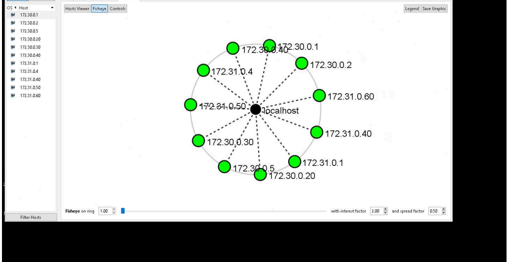
Zenmap translated discovery results into a topology view of the scanned environment.
Build an evidence-backed view of exposure across the target network.
The lab used direct network interaction to discover active systems, enumerate ports and services, observe scanning behavior in packet captures, and assess vulnerabilities. The assessment progressed from broad network mapping to focused analysis of MS17-010 and a weak MySQL/MariaDB password finding.
Which systems were active across the two target subnets?
Which ports, services, host details, and relationships were exposed?
How did SYN, ACK, and TCP Connect scans appear on the wire?
Which documented vulnerabilities required remediation?
Move from asset discovery to prioritized corrective action.
- 01
Discover live hosts
Run a Ping Scan across
172.30.0.0/24and172.31.0.0/24to establish the active asset set. - 02
Enumerate exposure
Use Quick Scan Plus, custom scans, ACK scanning, and the SSH host-key script to collect host and service details.
- 03
Validate scan mechanics
Review Wireshark captures for the packet exchanges produced by SYN and TCP Connect scans against port 22.
- 04
Assess and remediate
Review Nessus and OpenVAS findings, analyze the documented risk, and use scanner guidance to define corrective action.
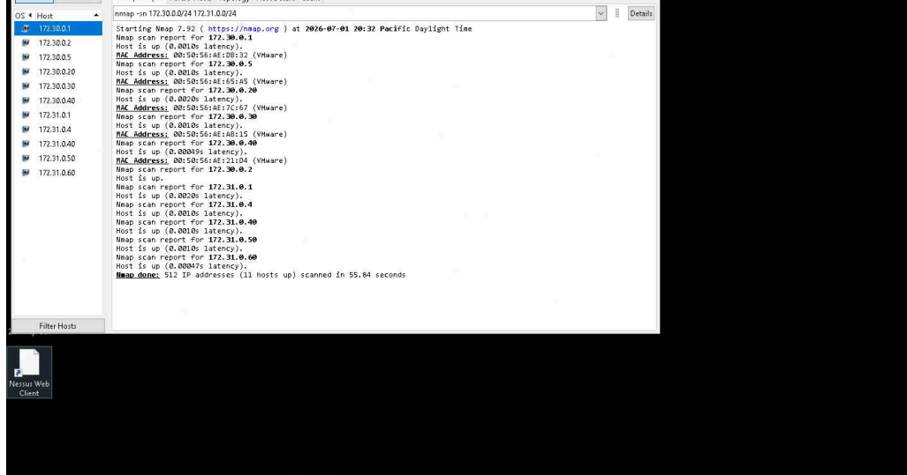
The two-subnet Ping Scan identified 11 active hosts.
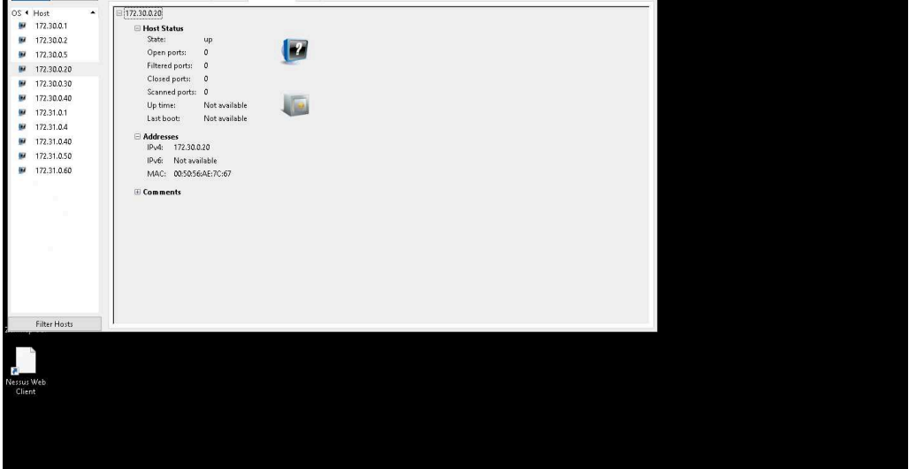
Quick Scan Plus exposed status, address, and host-detail information for 172.30.0.20.
Five complementary tools, each answering a different assessment question.
Nmap and its Zenmap interface handled discovery, enumeration, custom scanning, ACK analysis, and SSH host-key inspection. Wireshark exposed the scan traffic at packet level. Nessus supplied the MS17-010 finding and plugin guidance, while OpenVAS documented the weak MySQL/MariaDB password issue and its solution.
Hosts, topology, ports, services, and scan scripts.
SYN and TCP Connect sequences on port 22.
MS17-010 and weak database credentials.
Eleven live systems established the assessment scope.
The Ping Scan reported 11 hosts up across the 172.30.0.0/24 and 172.31.0.0/24 networks. Subsequent Quick Scan Plus results added information about open ports, services, operating systems, and host configuration. Zenmap topology views visualized the discovered systems and their relative network relationships.
11 active hosts were identified across the two target networks, providing a concrete inventory for deeper scanning.
The initial topology represented the discovered systems around the scanner.
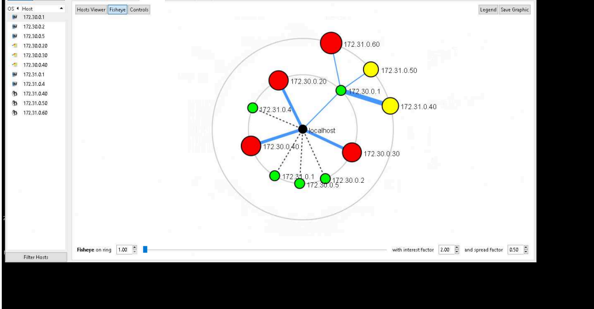
The custom-scan topology added color-coded host and connectivity context.
Validate scan results by observing the packets that produced them.
Wireshark captured the three-packet exchange generated by a SYN scan against port 22 on 172.30.0.20: SYN, SYN/ACK, and RST. A TCP Connect scan produced the documented four-packet sequence, adding the connection-completing ACK before the reset. This confirmed how the two scan methods interacted with an open SSH port.
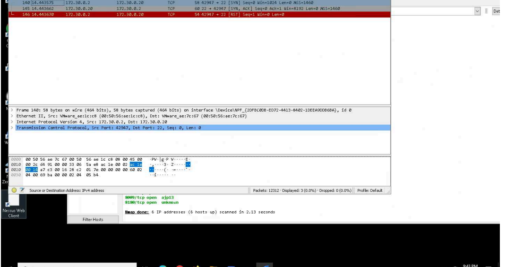
The SYN scan identified the open port without completing a full TCP connection.
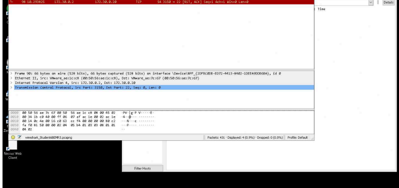
The TCP Connect capture showed the additional ACK before connection teardown.
An ACK scan against 172.30.0.20 reported all tested ports as filtered. A separate Nmap SSH host-key script scan against 172.31.0.60 found port 22 open and returned the server's SSH key fingerprints.
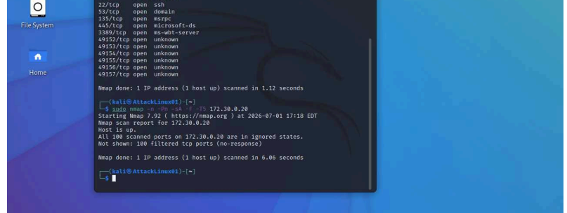
The ACK scan reported the tested ports on 172.30.0.20 as filtered.
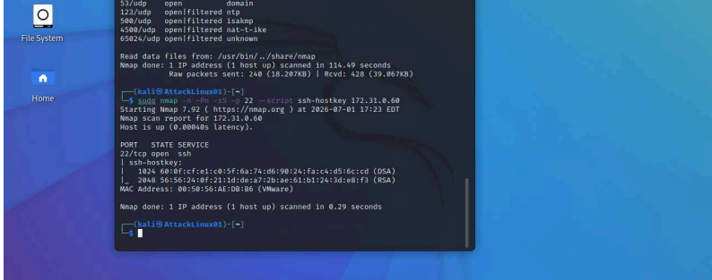
The script scan enumerated SSH key fingerprints from the open port 22 service.
Two scanners exposed distinct, actionable weaknesses.
A custom Nessus policy supported the vulnerability check. Its results identified MS17-010 and presented the associated severity, plugin details, vulnerability description, and remediation information. OpenVAS separately reported that the MySQL/MariaDB service accepted a weak root password and provided a password-change solution.
A Windows SMB vulnerability with plugin and remediation details.
Root access was possible with a weak documented credential.
Each result paired detection evidence with corrective guidance.
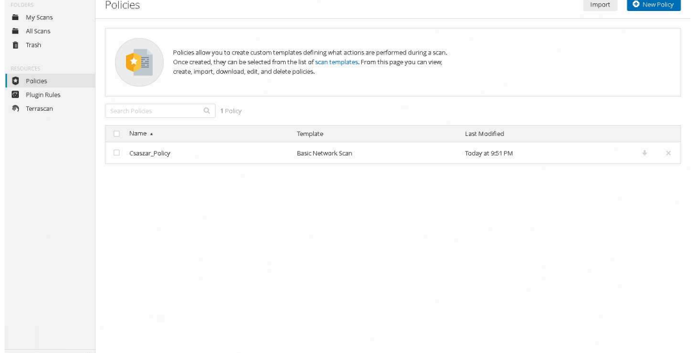
The custom policy defined the settings used for the Nessus check.
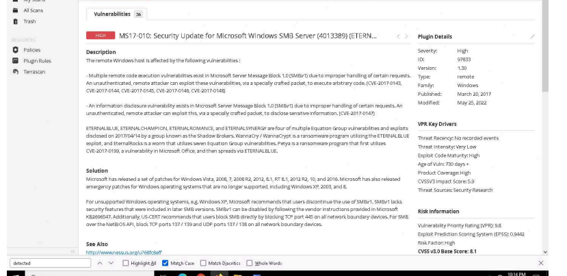
Nessus documented the MS17-010 exposure and remediation information.
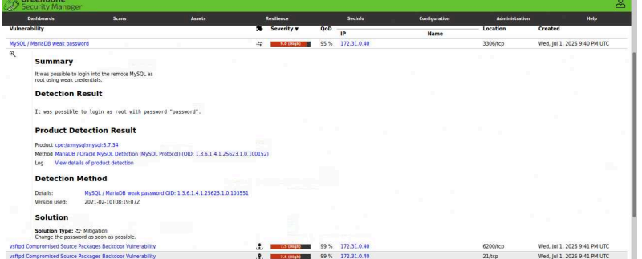
OpenVAS showed the weak-password detection evidence and advised changing the password promptly.
Prioritize the confirmed weaknesses and reduce exposed attack paths.
- 01
Address MS17-010
Follow the Microsoft security-update guidance referenced in the Nessus plugin output for the affected SMB service.
- 02
Replace weak database credentials
Change the MySQL/MariaDB root password immediately, following the solution supplied by OpenVAS.
Reliable assessment comes from connecting scanner output to network behavior.
Discovery established scope before deeper testing. Service enumeration and topology clarified where exposed services existed. Packet captures made the scan mechanics observable, while Nessus and OpenVAS converted exposure into specific vulnerability and remediation evidence. Using these layers together produced a more defensible assessment than relying on a single scan result.
A traceable assessment from reconnaissance through remediation.
The lab demonstrated a complete active-reconnaissance workflow: identify assets, enumerate exposure, validate scan behavior, analyze vulnerability evidence, and translate confirmed findings into focused remediation work.
← Return to selected work